Glass Beach Road Trip 2012
San Francisco Glass Beach Santa Cruz Beach Boardwalk
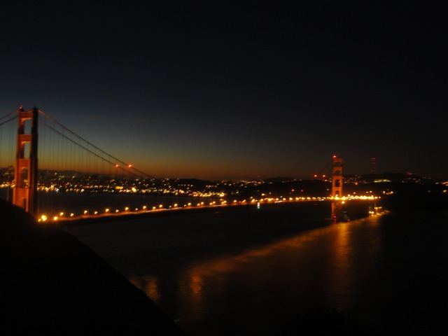
After that fun night in a parking lot, we ended up back in San Francisco in the morning to see the sun rise over the Golden Gate Bridge.
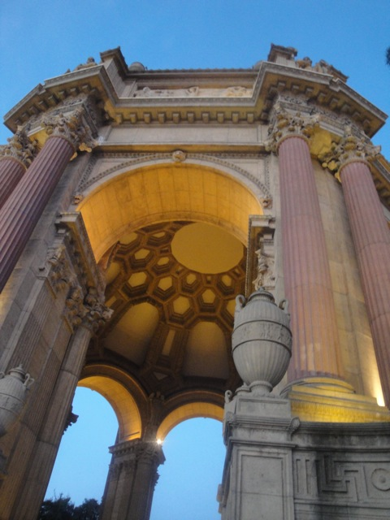
All right. First stop of the morning.
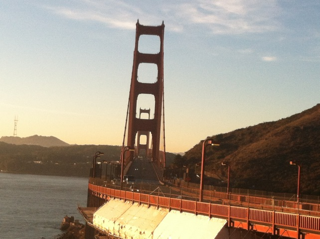
We came back to the Golden Gate Bridge to walk across, but it was closed off to pedestrians since they were doing a San Francisco Marathon that morning. Oh well.
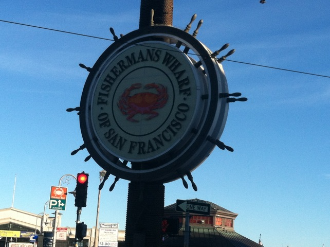
Hmm, what else haven't we done? Ah. Fishermans Wharf. Lets go there.
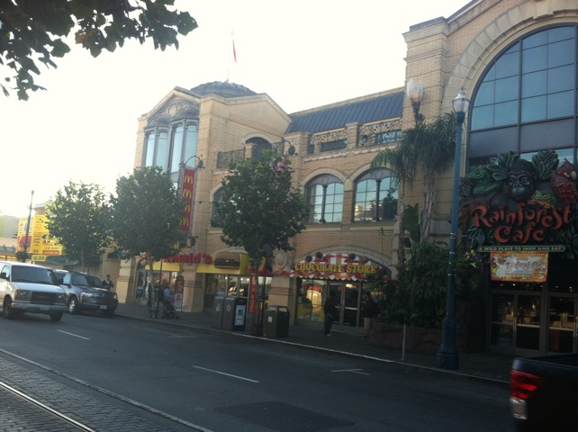
San Francisco is awesome.
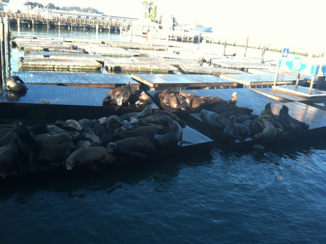
Oh sh*t. I think we came on a bad day. This place is full of fat loud obnoxious American Tourists.
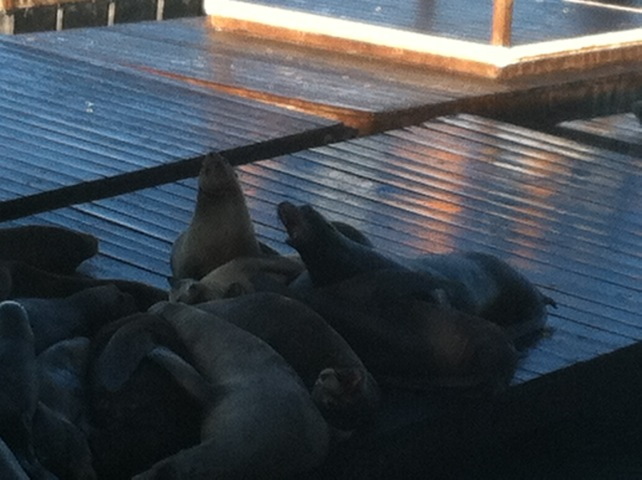
Hey Alisa. Do you prefer the seals or the owls? =)
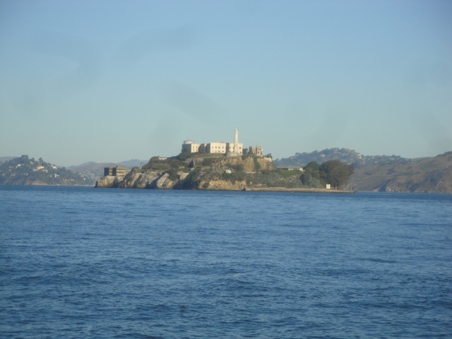
"Hey guys!!! I found a place we could've spent the night!!!"
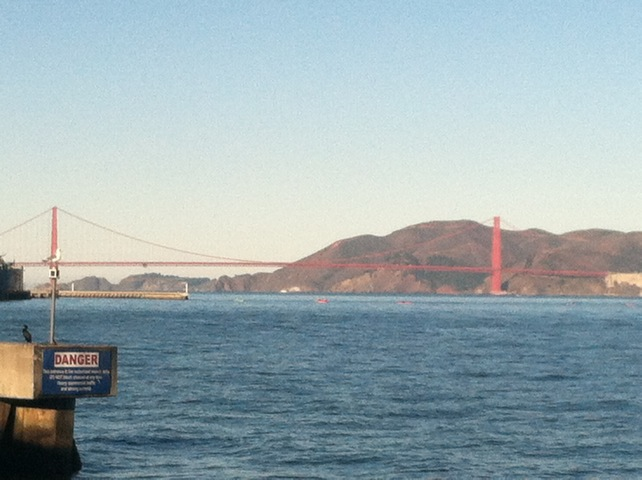
Another good shot of the Golden Gate Bridge.
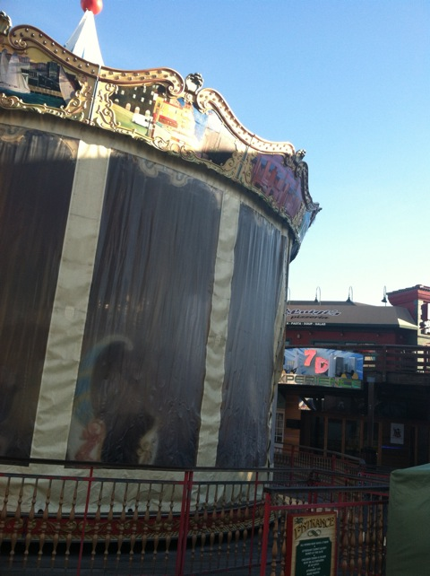
Alisa is not going to be happy to find out that the carousel is closed. Next we'll be telling her that there are no owls on this trip.
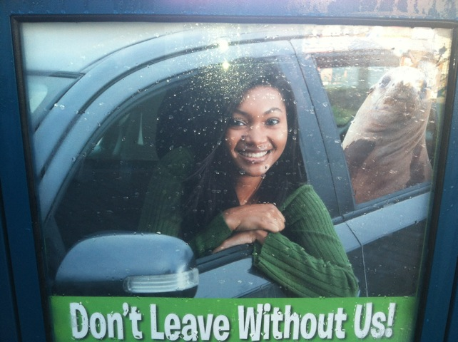
Sorry Mr. Seal. Our car is full.
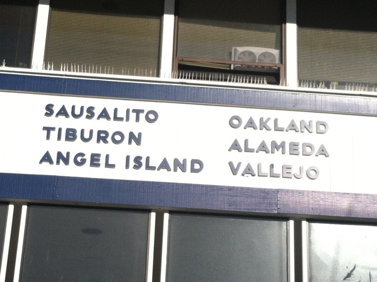
Hey Alex!!! Lets all go to Six Flags Discovory Kingdom today!!! =)
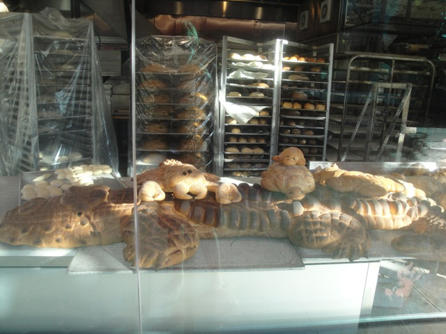
All right. This is a good place for breakfast. Hey, I approve of any place that sells Alligator shaped Sourdough Bread.
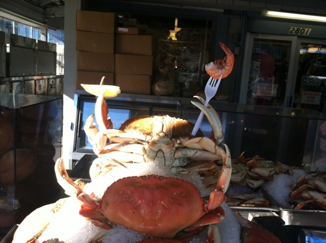
Is the crab eating shrimp borderline cannibalism? Hey, they're both in the Pleocyemata family.
 All right. Thats enough San Francisco for this trip. Time to hit up the theme park.
All right. Thats enough San Francisco for this trip. Time to hit up the theme park.
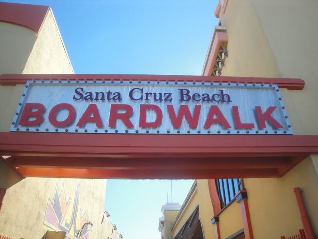
It's about damn time we did a theme park on this trip considering the fact that we are IncredibleCOASTERS.
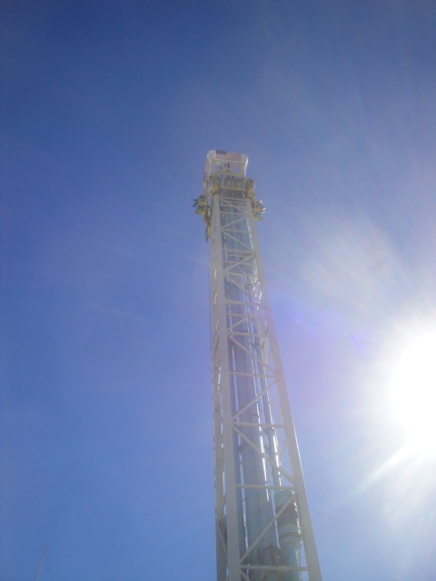
Finally got on the Double Shot here. MAN does it run a weak program.
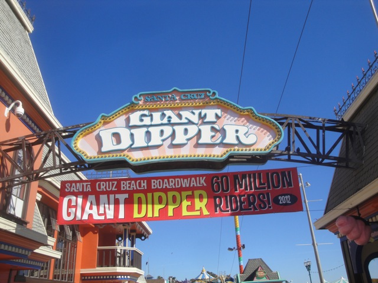
But thats not why we're here. We came to get more rides on the Santa Cruz Giant Dipper!!! =)
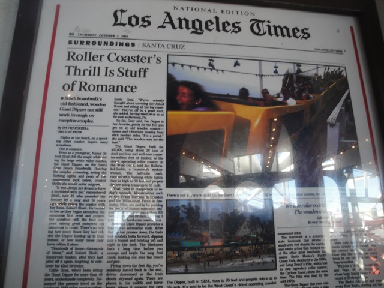
Warning. If you ever see an L.A Times Article on theme park or roller coaster news (excluding the possibility of some horrific accident, and take horrific accident with a grain of salt. Getting stuck on a lifthill is NOT a horrific accident *cough* California's Great America & Six Flags America *cough*.), automatically discredit it as made up bullsh*t.
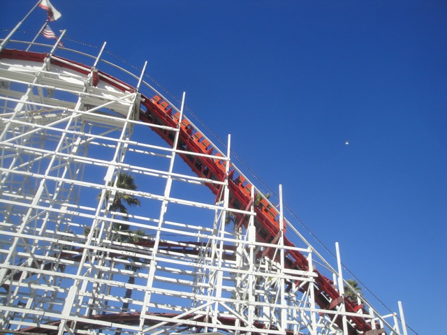
It's funny. A month ago, we rode the Giant Dipper at Belmont Park. And now we're here. =)
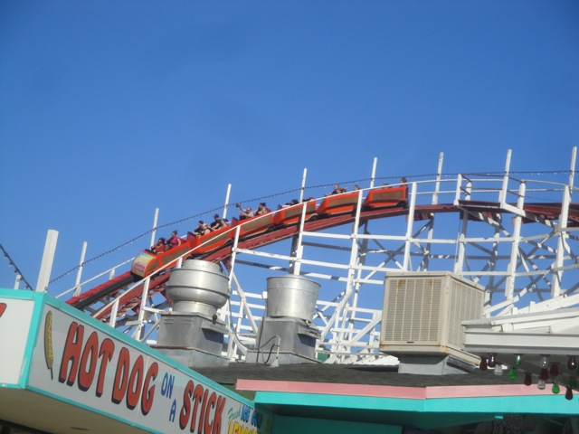
Definetly the best wooden coaster in California.
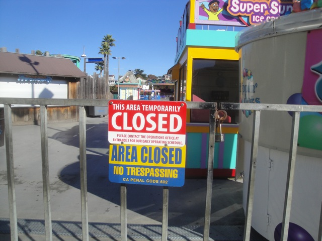
ARGH!!!! WHY DID YOU CLOSE THIS ENTIRE SIDE OF THE PARK!!! DAMMIT!!! NOW I CAN'T GET THAT KIDDY CREDIT!!!! Oh well. I'll just have to get it when I come back next year on our Nor Cal Trip.
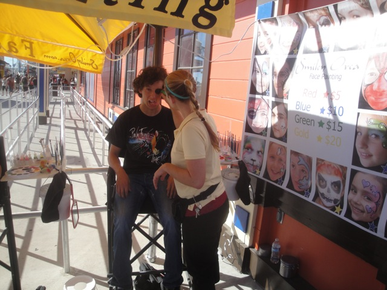
Hey. Why not have some fun and do the face paint.
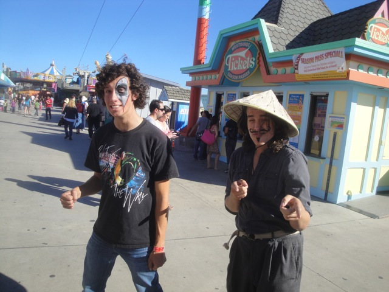
"The facepaint. Isn't she a beautiful."
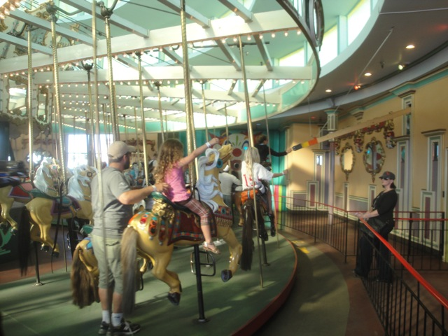
And of course, since we're here with a Carousel Enthusiast, we just had to do the carousel! =)
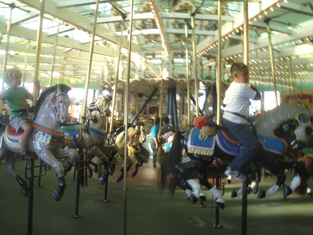
But hey. This carousel is awesome as its one of the few carousels that let you grab rings.
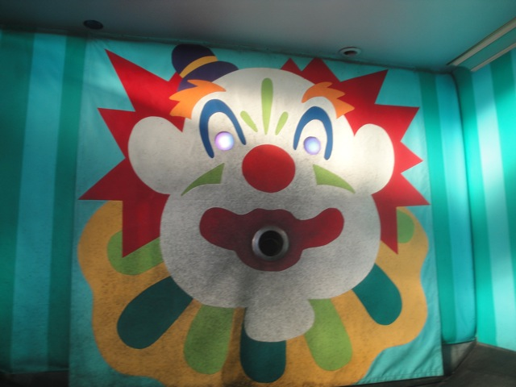
Feed the clown the rings so he can grow up big and strong and return the favor by eating you.
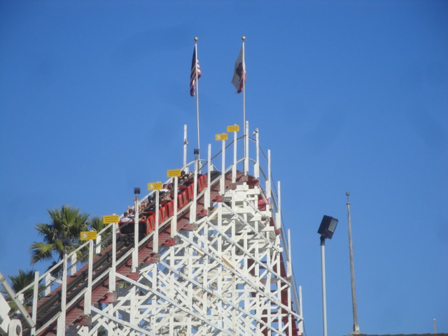
So glad we stopped for this.
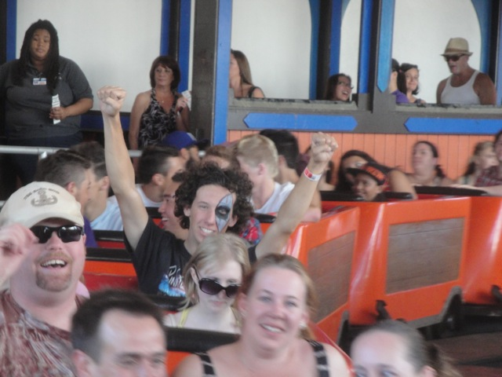
"Go ahead, make my day."
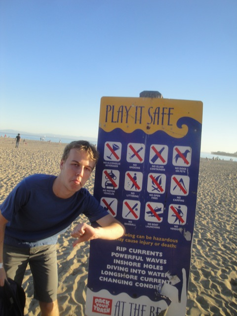
"What sort of loser decided that we can't play baseball on the beach?" =(
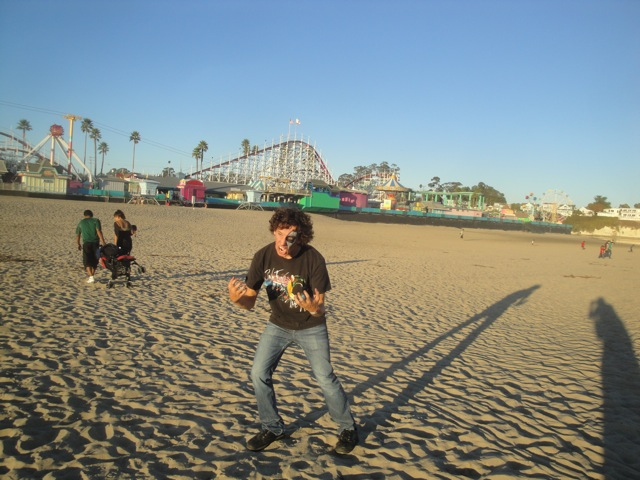
GRR!!!! CODY WANT MORE GIANT DIPPER!!!!!
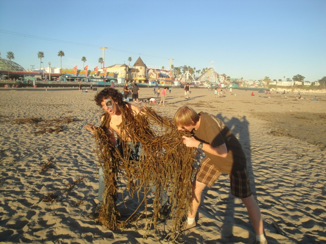
"GAH!!!! THE SEAWEED MONSTER HAS RISEN!!!! AND HE'S MAKING THE ENTIRE BOARDWALK STARE AT HIM AS HE WALKS BACK TO HIS CAR!!!!!" Seriously, this was an awesome weekend. Our first road trip was a total success. Now it's time for us to do Texas in 2013. =)
Home